Любое судно, обязанное уступить дорогу, должно своевременно и решительно изменить курс и пройти позади кормы другого судна. Если по каким‑то причинам это невозможно, оно должно ясно показать, как собирается уклониться. При наличии звукового сигнала — подать соответствующий сигнал изменения курса. Суда, имеющие преимущество, обязаны сохранять курс.
Основное правило:
► Спортивные лодки («малые суда») длиной менее 20 м должны уступать дорогу всем коммерческим судам.
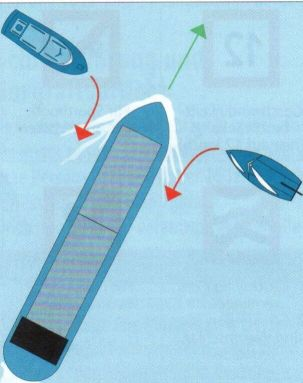
Малые суда уступают
► Моторные лодки — включая парусные лодки, идущие под мотором — между собой: при встречном курсе оба должны уклониться вправо (на правый борт). В остальных случаях действует правило «помеха справа» как в дорожном движении
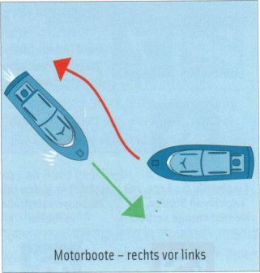
► Пересекающиеся курсы: Судно, находящееся по левому борту (слева), является уступающим судном. Судно, находящееся по правому борту (справа), является судном, сохраняющим курс и скорость.
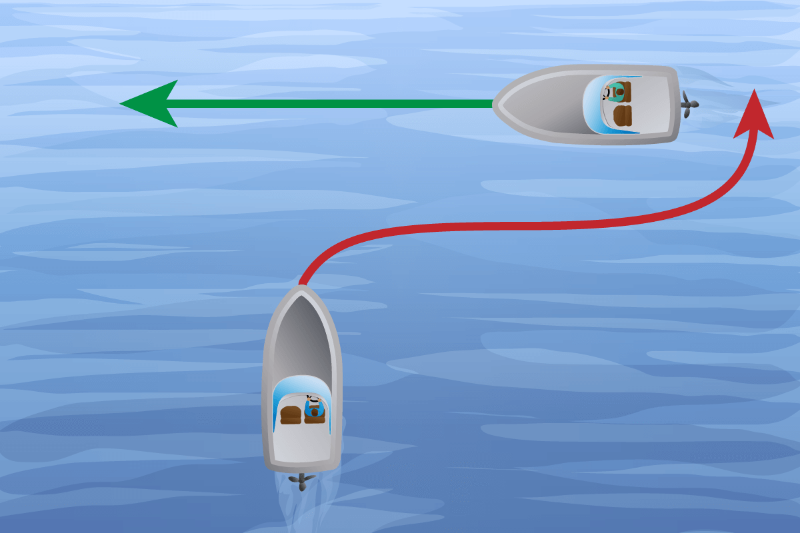
► Обгон: Судно, обгоняющее другое судно, является уступающим судном. Обгоняемое судно является судном, сохраняющим курс и скорость.
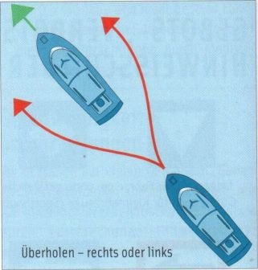
► Встречный курс: Оба судна обязанны уступить дорогу и повернуть на правый борт (вправо).
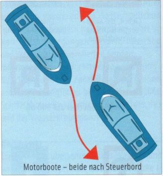
► Моторные лодки уступают парусным лодкам, идущие под парусом.
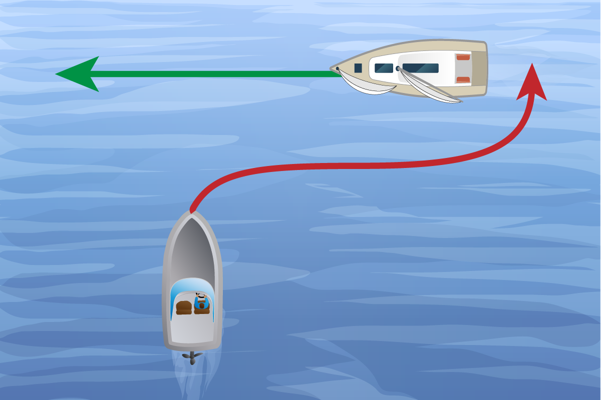
► Парусные лодки между собой: если ветер у них с разных сторон, уступает лодка с ветром с левого борта (Backbord).
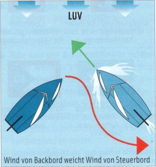
► Парусные лодки между собой: если ветер с одной стороны — уступает наветренная (LUV) лодка.
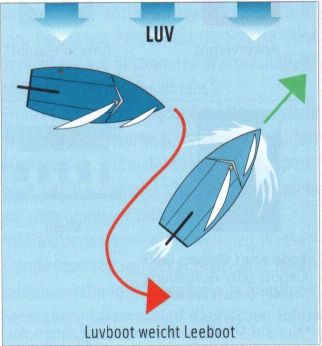
► Парусные лодки пересекающие форватер, должны уклониться. При входе в, выходе из и поворотах в границах форватера, лодка на форватере пользуется приоритетом.
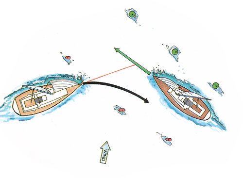
► Если подветренная лодка с ветром с левого борта (Backbord) не может уверенно определить, с какой стороны ветер у наветренной лодки, она должна уступить.
► Парусная лодка, идущая галсами, не должна вынуждать спортивную лодку, идущую вдоль правого берега, уступать дорогу.
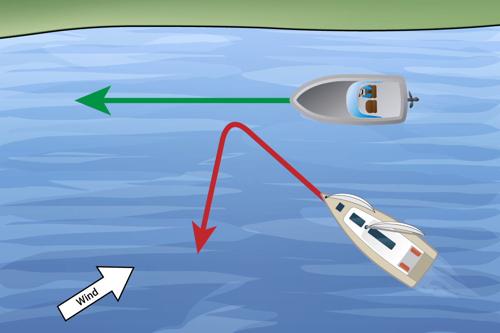
Парусная лодка уступает моторной у берега
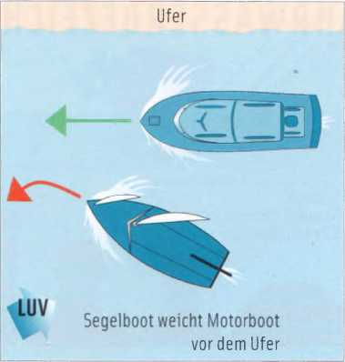
► Моторные, парусные и гребные лодки: моторная лодка должна уступить парусной и гребной. Гребная лодка должна уступить парусной. Однако яхтсмен должен учитывать, что гребец или байдарочник может не знать правил и считать, что у него преимущество.
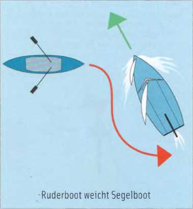
Гребная лодка уступает парусной
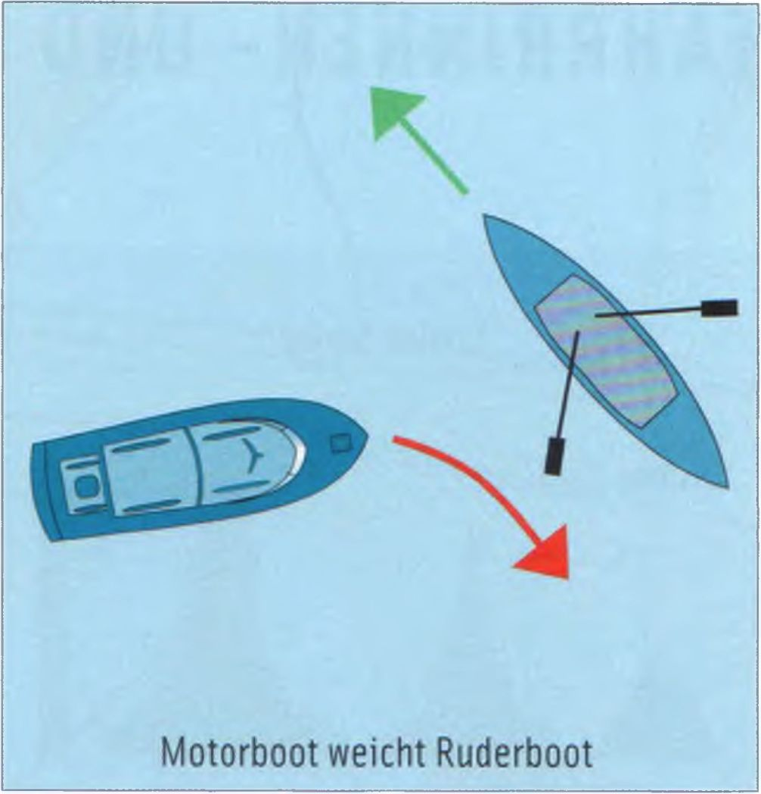
Моторная лодка уступает весельной
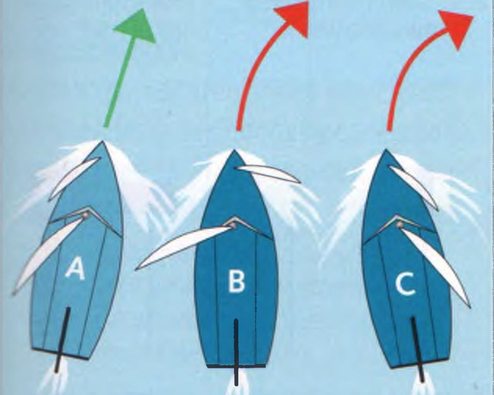
НАВЕТРЕННАЯ СТОРОНА
Парусная лодка A обязана держать курс